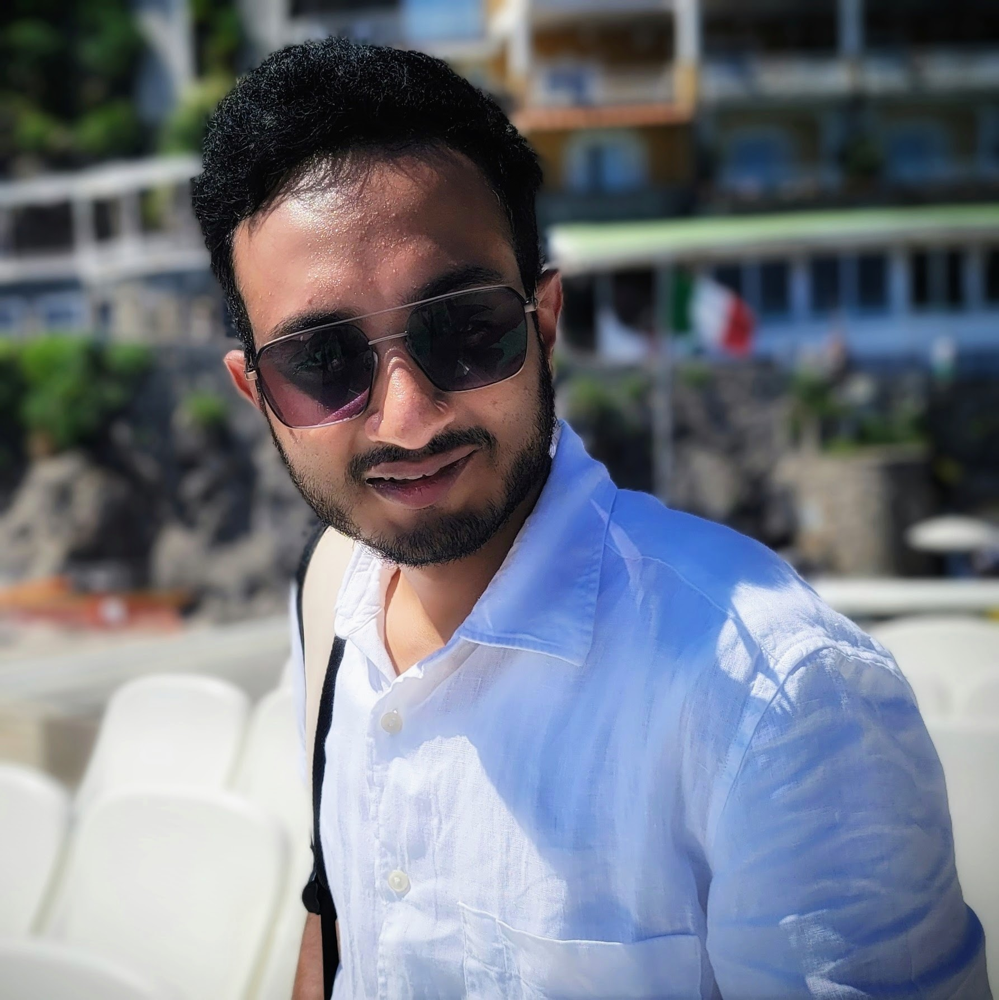
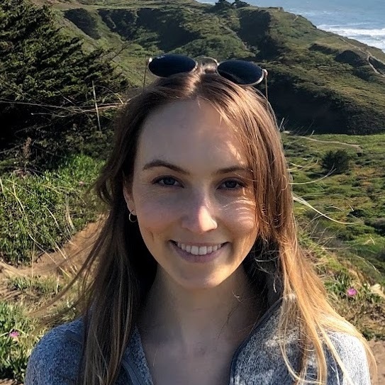

Schedule
Full-day workshop at NeurIPS 2026, Dec 11th, Sydney, Australia
Note: The schedule is tentative and subject to change.
08:00 - 08:15
Opening Remarks
Welcome and introduction to the workshop
08:15 - 08:45
Keynote: Dr. Chang Xu
University of Sydney
Title: TBD
08:45 - 09:15
Keynote: Dr. Alexander Toshev
Wayve
Title: TBD
09:15 - 09:40

Keynote: Dr. Kashyap Chitta
KESAI
Title: TBD
09:40 - 09:55
Coffee Break
09:55 - 10:25
Keynote: Dr. Igor Gilitschenski
University of Toronto
Title: TBD
10:25 - 10:50
Keynote: Dr. Manling Li
Northwestern University
Title: TBD
10:50 - 11:10
Oral Session I
Two selected papers — 10 minutes each
11:10 - 13:00
Poster Session I + Lunch
Poster presentations and networking
13:00 - 13:30
Keynote: Dr. Azalia Mirhoseini
Stanford, Ricursive Intelligence
Title: TBD
13:30 - 14:00

Keynote: Dr. Kaylee Burns
Waymo
Title: TBD
14:00 - 14:25
Keynote: Dr. Chuchu Fan
MIT
Title: TBD
14:25 - 14:50
Keynote: Dr. Kristen Grauman
UT Austin
Title: TBD
14:50 - 15:10
Oral Session II
Two selected papers — 10 minutes each
15:10 - 15:40

FireChat:TBD
TBD
15:40 - 16:00
Awards, Closing Remarks & Group Photo
Best paper award and challenges awards
16:00 - 17:00
Poster Session II
Poster presentations and networking